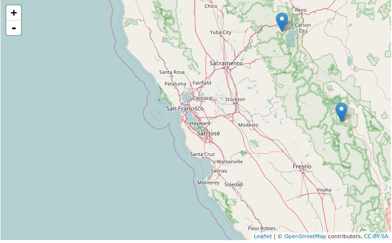

vignettes/the_GeoMongo_package.Rmd
the_GeoMongo_package.RmdSince I submitted the geojsonR package I was interested in running geospatial MongoDB queries using GeoJson data. I decided to use PyMongo (through the reticulate package) after opening two Github issues here and here. In my opinion, the PyMongo library is huge and covers a lot of things however, my intention was to be able to run geospatial queries from within R.
The GeoMongo package allows the user,
I was able to reproduce the majority of geospatial MongoDB queries ( System Requirements : MongoDB (>= 3.4) and Python (>= 3.5) ) using a number of blog posts on the web, however I’ll take advantage of the following two in order to explain how one can use the GeoMongo package for this purpose:
When inserting data using the geomongo R6 class the user has the option (via the TYPE_DATA parameter) to either give a character string (or vector), a list, a file or a folder of files as input. To start with, I’ll use the following character strings ( they appear in the first example blog post , the "_id" ’s were removed),
library(GeoMongo)
# important : the property-names of each geojson object should be of type character string
loc1 = '{
"name" : "Squaw Valley",
"location" : {
"type" : "Point",
"coordinates" : [
-120.24,
39.21
]
}
}'
loc2 = '{
"name" : "Mammoth Lakes",
"location" : {
"type" : "Point",
"coordinates" : [
-118.9,
37.61
]
}
}'
loc3 = '{
"name" : "Aspen",
"location" : {
"type" : "Point",
"coordinates" : [
-106.82,
39.18
]
}
}'
loc4 = '{
"name" : "Whistler",
"location" : {
"type" : "Point",
"coordinates" : [
-122.95,
50.12
]
}
}'
# create a vector of character strings
char_FILES = c(loc1, loc2, loc3, loc4) Before inserting the data one should make sure that MongoDB is running on the Operating System. Information on how to install MongoDB can be found here.
The geomongo R6 class will be initialized and a database and collection will be created,
init = geomongo$new(host = 'localhost', port = 27017) # assuming MongoDB runs locally
getter_client = init$getClient() # get MongoClient()
init_db = getter_client[["example_db"]] # create a new database
init_col = init_db$create_collection("example_col") # create a new collectionAfter the preliminary steps, one can continue by inserting the char_FILES object to the relevant database / collection using the geoInsert method. The TYPE_DATA parameter equals here to dict_many meaning it can take either a list of lists (nested list) or a character vector of strings,
init$geoInsert(DATA = char_FILES, # input data
TYPE_DATA = 'dict_many', # character vector of strings as input
COLLECTION = init_col, # specify the relevant collection
GEOMETRY_NAME = "location") # give the 'geometry name' of each geo-objectOne can now run various commands to check the correctness of the inserted data,
init_db$collection_names() # prints out the collection names of the relevant database
"example_col"
init_col$find_one() # prints one of the inserted geometry objects$`_id`
5984a0b742b2563fb5838f6a
$location
$location$type
[1] "Point"
$location$coordinates
[1] -120.24 39.21
$name
[1] "Squaw Valley"
init_col$count() # prints the number of the inserted geometry objectsI’ll continue reproducing some of the geo-queries of the first example blog post from within an R-session.
The first query is about the number of locations in the state of Colorado, where Colorado is approximated as the below GeoJson square,
{
"type": "Polygon",
"coordinates": [[
[-109, 41],
[-102, 41],
[-102, 37],
[-109, 37],
[-109, 41]
]]
}and the corresponding MongoDB query would be,
db.locations.find({
... location: {
... $geoIntersects: {
... $geometry: {
... type: "Polygon",
... coordinates: [[
... [-109, 41],
... [-102, 41],
... [-102, 37],
... [-109, 37],
... [-109, 41]
... ]]
... }
... }
... }
... })This query can be translated in R in the following way:
query_geoIntersects = list('location' =
list('$geoIntersects' =
list('$geometry' =
list(
type = "Polygon",
coordinates =
list(
list(
c(-109, 41),
c(-102, 41),
c(-102, 37),
c(-109, 37),
c(-109, 41)
)
)
)
)
)
)and the find METHOD of geoQuery function will be used to return locations which are within the boundaries of Colorado,
loc_intersect = init$geoQuery(QUERY = query_geoIntersects, # query from previous chunk
METHOD = "find", # the method to use
COLLECTION = init_col, # the collection to use
GEOMETRY_NAME = "location", # the geometry name to use
TO_LIST = FALSE) # returns a data.table
loc_intersectThe output can be returned either as a list or as a data.table,
# data.table format
location.type location.coordinates1 location.coordinates2 name id
1: Point -106.82 39.18 Aspen 5984a0b742b2563fb5838f6cThe next few code chunks will show how to return documents that are within a certain distance of a given point using the geoWithin and centerSphere operators (locations with a square of circumradius 300 miles centered on San Francisco, approximately latitude 37.7, longitude -122.5).
# MongoDB query
db.locations.find({
... location: {
... $geoWithin: {
... $centerSphere: [[-122.5, 37.7], 300 / 3963.2]
... }
... }
... })and the corresponding query in R,
geoWithin_sph = list('location' =
list('$geoWithin' =
list('$centerSphere' =
list(
c(-122.5, 37.7), 300 / 3963.2)
)
)
)
# no need to specify again the "COLLECTION" and "GEOMETRY_NAME" parameters
# as we use the same initialization of the R6 class with the previous query
res_geoWithin_sph = init$geoQuery(QUERY = geoWithin_sph,
METHOD = "find")
res_geoWithin_sph# example output
location.type location.coordinates1 location.coordinates2
1: Point -118.90 37.61
2: Point -120.24 39.21
name id
Mammoth Lakes 5984a0b742b2563fb5838f6b
Squaw Valley 5984a0b742b2563fb5838f6aOne can read more about the magic number 3963.2 (radius of the Earth) either in the first example blog post or in the MongoDB documentation.
Here one can also plot the output locations using the leaflet package,
map_dat <- leaflet::leaflet()
map_dat <- leaflet::addTiles(map_dat)
map_dat <- leaflet::addMarkers(map_dat,
lng = unlist(res_geoWithin_sph$location.coordinates1),
lat = unlist(res_geoWithin_sph$location.coordinates2))
map_dat
The next query utilizes the aggregate method to return the locations sorted by distance from a given point,
# MongoDB query
db.locations.aggregate([{
... $geoNear: {
... near: {
... type: 'Point',
... coordinates: [-122.5, 37.1]
... },
... spherical: true,
... maxDistance: 900 * 1609.34,
... distanceMultiplier: 1 / 1609.34,
... distanceField: 'distanceFromSF'
... }
... }])and the corresponding query in R,
query_geonear = list('$geoNear' =
list(near =
list(
type = "Point",
coordinates =
c(-122.5, 37.1)
),
distanceField = "distanceFromSF",
maxDistance = 900 * 1609.34,
distanceMultiplier = 1 / 1609.34,
spherical = TRUE)
)
func_quer_geonear = init$geoQuery(QUERY = query_geonear,
METHOD = "aggregate")
func_quer_geonear# example output
distanceFromSF location.type location.coordinates1 location.coordinates2
1: 190.8044 Point -120.24 39.21
2: 201.0443 Point -118.90 37.61
3: 863.9478 Point -106.82 39.18
name id
Squaw Valley 5984a0b742b2563fb5838f6a
Mammoth Lakes 5984a0b742b2563fb5838f6b
Aspen 5984a0b742b2563fb5838f6cI picked this documentation example in order to show how someone can use the command METHOD besides the find and aggregate methods.
First I’ll build a new collection (places) and then I’ll insert the example data,
places_col = init_db$create_collection("places") # create a new collection
# important : the property-names of each geojson object should be of type character string
place1 = '{
"name": "Central Park",
"location": { "type": "Point", "coordinates": [ -73.97, 40.77 ] },
"category": "Parks"
}'
place2 = '{
"name": "Sara D. Roosevelt Park",
"location": { "type": "Point", "coordinates": [ -73.9928, 40.7193 ] },
"category": "Parks"
}'
place3 = '{
"name": "Polo Grounds",
"location": { "type": "Point", "coordinates": [ -73.9375, 40.8303 ] },
"category": "Stadiums"
}'
# create a vector of character strings
doc_FILES = c(place1, place2, place3)
init$geoInsert(DATA = doc_FILES, # insert data
TYPE_DATA = 'dict_many', # character vector of strings as input
COLLECTION = places_col, # specify the relevant collection
GEOMETRY_NAME = "location") # give the 'geometry name' of each geo-object
# outputs the collection names
init_db$collection_names()
places_col$count() # number of geojson objects in collectionAfter the data is inserted one can now query the data using the command METHOD.
Worth mentioning for this particular method are the differences between MongoDB and PyMongo. The following code chunk shows the MongoDB runCommand,
db.runCommand(
{
geoNear: "places",
near: { type: "Point", coordinates: [ -73.9667, 40.78 ] },
spherical: true,
query: { category: "Parks" }
}
)which corresponds to the following query in GeoMongo (similar to PyMongo),
Args_Kwargs = list("geoNear", "places",
near = list("type" = "Point", "coordinates" = c(-73.9667, 40.78)),
spherical = TRUE,
query = list("category" = "Parks"))Information about the various parameters of the command method can be found in the PyMongo documentation.
Then the GeoMongo command method takes the parameters in the same way as the find or aggregate methods,
init$geoQuery(QUERY = Args_Kwargs,
METHOD = "command",
COLLECTION = places_col,
DATABASE = init_db, # additionally I have to specify the database
TO_LIST = FALSE)which returns only the ‘Parks’ (of the category property name) from the input documents,
obj.category obj.location.type obj.location.coordinates1 obj.location.coordinates2
1: Parks Point -73.9700 40.7700
2: Parks Point -73.9928 40.7193
obj.name dis id
Central Park 1147.422 5985b4d242b2563fb5838f6e
Sara D. Roosevelt Park 7106.506 5985b4d242b2563fb5838f6fThe following two blog posts include also a variety of geospatial queries ( here and here ).
More details about the geomongo R6 class and each method (read_mongo_bson(), geoInsert(), geoQuery()) can be found in the Details and Methods of the package documentation.
When inserting data to MongoDB there are cases where the id appears in the following format,
# data taken from : https://docs.mongodb.com/manual/tutorial/geospatial-tutorial/
example_dat = '{"_id":
{"$oid":"55cba2476c522cafdb053add"},
"location":
{"coordinates":[-73.856077,40.848447],"type":"Point"},
"name":"Morris Park Bake Shop"}'
bson_col = init_db$create_collection("example_bson") # create a new collectionInserting the example_dat in the bson_col will raise an error,
init$geoInsert(DATA = example_dat, # insert data
TYPE_DATA = 'dict_one', # single list as input
COLLECTION = bson_col, # specify the relevant collection
GEOMETRY_NAME = "location", # give the 'geometry name' of each geo-object
read_method = "geojsonR")# example output
Error in py_call_impl(callable, dots$args, dots$keywords) :
InvalidDocument: key '$oid' must not start with '$'This error is explained also in a similar StackOverflow question
In such a case, one has to change the read_method to mongo_bson to correctly insert the data,
init$geoInsert(DATA = example_dat, # insert data
TYPE_DATA = 'dict_one', # single character string as input
COLLECTION = bson_col, # specify the relevant collection
GEOMETRY_NAME = "location", # give the 'geometry name' of each geo-object
read_method = "mongo_bson")Finally, we can check the correctness of the inserted data,
bson_col$count()
bson_col$find_one()